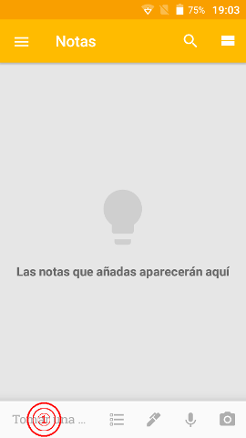

Primero de todo.. ¿Que es Google Keep?
Google Keep es una aplicación de bloc de notas en la nube, es decir, nos permite almacenar información de tipo texto, audio o incluso imágenes, y los almacena en la nube para facilitar la sincronización y el acceso a nuestra información desde varios dispositivos y lugares.
¿Donde podemos conseguirlo?
En nuestros dispositivos android es tan sencillo como dirigirnos a la Google Play Store, buscar “Google Keep” y pulsar el botón instalar, una vez se haya completado la instalación podremos acceder a ella desde el cajón de aplicaciones.
Ya lo tengo instalado.. ¿y ahora como creo una Nota de Texto?
Al abrir la aplicación, nos encontraremos una ventana principal tal y como en la imagen a continuación:
